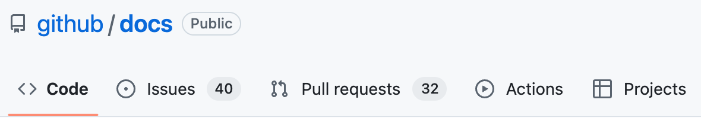
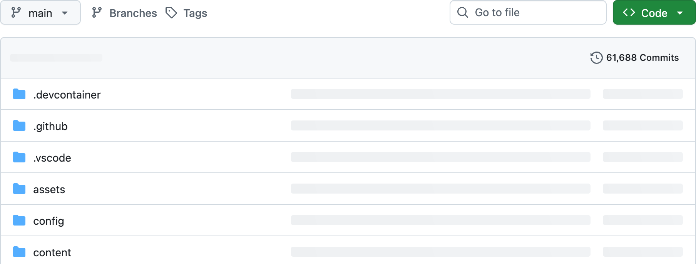
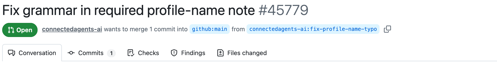
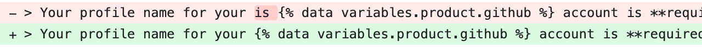
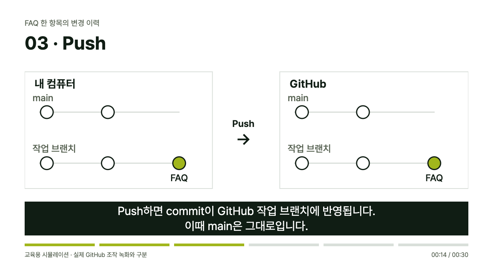

GitHub 온보딩
내 작업을 팀의 결과물로 합치는 방법
직접 해보는 협업 실습실기록 1 · 수정 전
GitHub 초대 수락 방법
1. 초대 메일 확인
기록 2 · 한 줄 추가
GitHub 초대 수락 방법
1. 초대 메일 확인
+ 2. GitHub에서 초대 수락
같은 파일의 이전 내용 보존과 변경 부분 비교
Git에 각 버전을 기록한 경우 · 일반 파일 저장과 구분
Git: 분산 버전관리 시스템 · GitHub: Git의 협업 허브

Repo: 파일과 변경 이력의 기본 저장 단위
Owner
개인 계정 또는 조직
저장소의 소유 주체
Collaborator
접근 권한을 받은 협업자
조직 내 팀 단위 권한 부여도 가능
공개 여부와 별개인 쓰기 권한
조직 저장소의 역할 구분 · 면적은 권한량의 수치 표현이 아닌 개념 도식
팀 안내서 · 예시 Issue #12
접근 권한·Issues 활성화·참여 제한에 따른 등록 가능 범위

Remote팀이 공유하는 저장소
Clone내 컴퓨터로
최초 복제
로컬에서 수정·기록 후 공유 · 웹·클라우드 작업도 가능


PR 생성·추가 push는 접근 권한과 저장소 설정에 따름
전체 표 확인: 가로 스크롤
| 행동 | 의미 | 가능 범위 |
|---|---|---|
| Review | 검토 의견 제시 | 읽기 접근 권한이 있는 참여자 |
| Approve | 반영 가능 상태의 판단 | 권한·규칙에 따른 필수 승인 인정 |
| Merge | 대상 브랜치에 반영 | 통상 Write 이상 + 병합 조건 충족 |
소유자 외 참여자의 리뷰·merge 가능 · 자기 PR 승인 불가
지정 담당자의
최종 merge
교육용 운영 예시 · GitHub의 기본 소유자 전용 기능과 구분
문의: 교육팀
문의: IT 지원팀
같은 항목의 서로 다른 변경
양쪽 의도 확인 후 최종 문의 경로 결정
Claude · ChatGPT
Claude Code·Codex 등 실행 도구를 통한 작업
준비: 저장소 접근 권한과 실행 도구 연결
“최신 main에서 작업 브랜치를 만들고,
Issue #12의 완료 조건에 맞춰
FAQ를 수정해 줘.”
완료 결과작업 브랜치의 FAQ 수정안
“Diff와 링크를 점검하고 commit해 줘.
작업 브랜치에 push한 뒤
main 대상 PR을 만들어 줘.”
완료 결과변경 이유·확인 결과·Issue #12를 담은 PR
최종 merge 담당자의 별도 지정
“PR의 리뷰와 merge 상태를 확인해 줘.
Merge 완료 후 로컬 작업 상태를 확인하고,
main을 최신 상태로 갱신해 줘.”
완료 결과GitHub와 로컬 main의 FAQ 반영 확인
